Propagation channels are at the core of any wireless system: they determine not only the ultimate performance limits, but also the relative merits of different systems, and even give guidelines of how systems should be designed. The first axiom of wireless systems is : to design a wireless system, you must understand the channel in which it will operate.
The difficulties in wireless channel modeling are due to the complex propagation processes that form the basis of a wireless channel, involving reflections, scattering, diffraction, and transmission through a large number of irregular objects. For all practical purposes, it is thus necessary to derive simplified descriptions. The degree of admissible simplification, in turn, depends on the system for which the channel is intended. In the past 20 years, wireless systems have changed dramatically, from narrowband analogue systems, to MIMO wideband digital systems, and the deployment scenarios have expanded from cellular to WiFi, car-to-car, and internet of things. As the systems have evolved, so have the channel models needed for the design and evaluation.
WiDeS is one of the world’s leading institutions for the measurement and modeling of wireless propagation channels. Probably unique in the world, we deal with all aspects of this problem, from the design of measurement equipment, to performing measurement campaigns, to advanced signal processing for parameter extraction, to channel modeling; and we do that for channels ranging from distributed massive MIMO to car-to-car channels to millimeter-wave channels.
The following gives a high-level overview of our approach and capabilities; for details please see the related publications.
Any scientific investigation has to be based on measurement, so the first step in channel research is the construction of suitable measurement equipment, called “channel sounders”. The principle of channel sounding is simple: you send a known waveform from a transmitter, and the distortions the propagation channel impulses can be concluded from the received waveform. Simple examples of channel sounders are sinewave-generators (allowing for measurement of narrowband attenuation by the channel), pulse generators (for measuring the impulse response) or network analyzers.
At WiDeS we work on the construction of advanced channel sounders that allow to determine not only time- and frequency characteristics of the channels, but also of directional characteristics. This, in turn, requires transmission and reception of signals at multiple antennas (antenna arrays) at both link ends. By carefully measuring the relationship of the signals at the different antenna elements, we can make conclusions about the directions from which the different signals echoes are arriving at the receiver (and similarly at the transmitter).
An example of our recent work is an ultrawideband, flexible channel sounder for distributed MIMO measurements. A block diagram is shown below. With a wideband (10 GHz bandwidth) arbitrary waveform generator, we are creating multi-tone sounding signals that are distributed, via an optical switch and radio-over-fiber systems, to 16 transmit antenna arrays, each of which consists of 16 antenna elements. A similar configuration uses 16-element arrays to measure received signals at 16 locations and haul them back to an ultra-high-speed digitizer, from where the signals are stored onto a RAID array for processing. Careful calibration allows extraction of channel properties with high-resolution parameter extraction algorithms (link to the HRPE section).
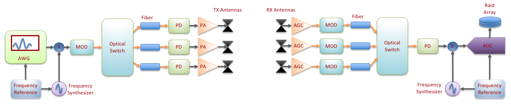
Block diagram of distributed MIMO sounder
A millimeter-wave, real-time MIMO sounder is another key component of our measurement capability, since it allows the dynamic measurement of directional mm-wave characteristics. Compared to the traditional approach of mechanically rotating horn antennas and measuring the impulse response for each horn orientation, our sounder measures a million times faster. This enables the measurement of dynamic directional effects, e.g., how the direction from which the main power comes is changed when a bus is passing by. On the other hand, this also allows to measure in many different locations within a reasonable time (a recent campaign collected 20 million impulse responses in less than a day), thus enabling statistically relevant parameter extraction and modeling.
The sounder construction is based on the principle of switching beams electronically, instead of using mechanical rotation. The radio frequency units are constructed by Samsung Research America, and the sounder is the result of close collaboration between Samsung and WiDeS. Another key characteristic is the extreme phase stability (hard to achieve at millimeter-wave frequencies), which allows the application of HRPE.
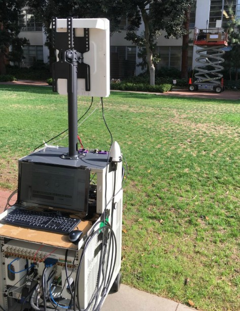
Our real-time, multi-beam mm-wave channel sounder
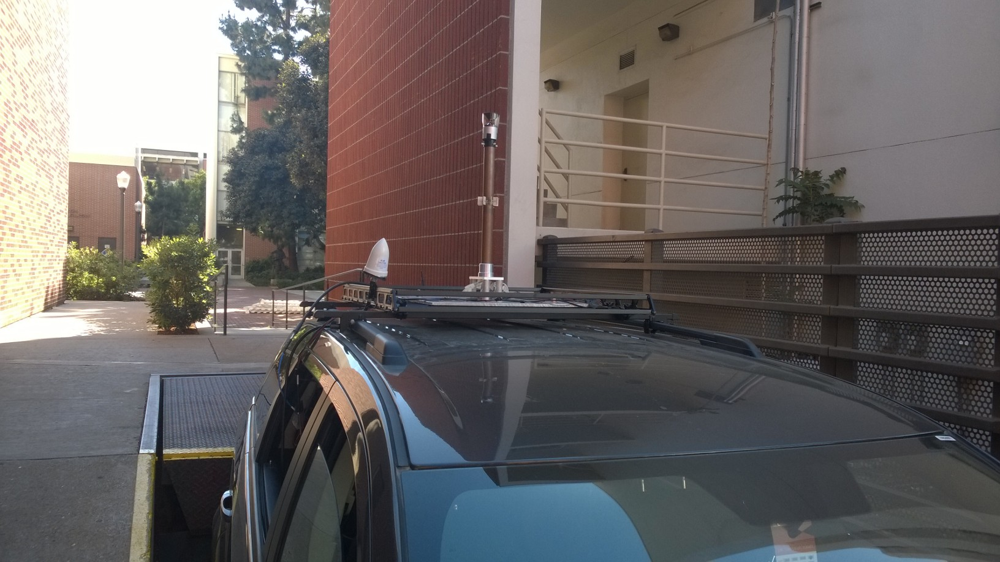
Channel sounder for V2V measurements
Yet another sounder we recently built is a MIMO sounder for vehicle-to-vehicle measurements. To make it more robust and flexible, this sounder is based on software-defined radio (SDR) components from National Instruments. WiDeS members programmed the FPGAs, wrote the control software, and added antenna switching capability to create a sounder that can measure 8x8 MIMO channels at 800 MHz and 5.9 GHz, with a 160 MHz bandwidth.
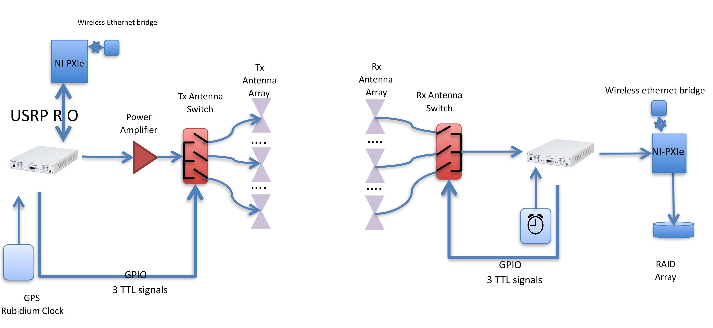
V2V Sounder
Measurement campaigns It is important to keep in mind that a channel measurement is not simply taking a "channel sounder" and hitting the "start" button. Channel measurements require careful planning, proper selection of what is measured, where, and how often it is measured, and an understanding of what we ultimately want to extract from the measurements. Examples are shown in massive MIMO, mm-wave and V2V
Parameter Extraction Methods
The result of measurements with channel sounders are impulse responses or transfer functions, from each transmit to each receive antenna element. However, for channel modeling, it is far preferable to know the directions, delays, and amplitudes of the signal echoes - also known as multipath components (MPCs) – of the channel. The simplest such parameter extraction is Fourier analysis, i.e., performing a Fourier transform of the transfer function (to obtain delay) and a spatial Fourier transform of the signals at the antenna elements (to obtain direction). However, the resolution of such extraction is limited by the measurement bandwidth (for delay) and size of the antenna array (for direction), which often is insufficient. At WiDeS, we thus use the much more advanced High Resolution Parameter Extraction (HRPE), which can give an order of magnitude better resolution. We are also performing active research on how to generalize and improve HRPE algorithms.
HRPEs are based on a parametric model of the wireless propagation channel, namely that the (double-directional) impulse response consists of a sum of multipath components (MPCs), each of which is characterized by its amplitude, delay, and directions at transmitter and receiver. The task of the estimation algorithm is then to find the parameters of the MPCs from the measurement results of the channel sounders. The first class of algorithms we work with are iterative maximum-likelihood estimators, in particular the RiMax algorithm, an improved variant of the popular SAGE algorithm. RiMAX tends to converge significantly faster than SAGE when multiple signals with similar parameters are present, thanks to the implementation of the joint parameter optimization. For estimating the time evolution of channels, a novel HRPE algorithm based on the extended Kalman Filter (EKF) can exploit the correlation between multipath parameters to further improve the estimation accuracy. The algorithm also solves the association problem between MPCs from adjacent snapshots, and the outcome provides the evolution of signals while mobile terminals move.
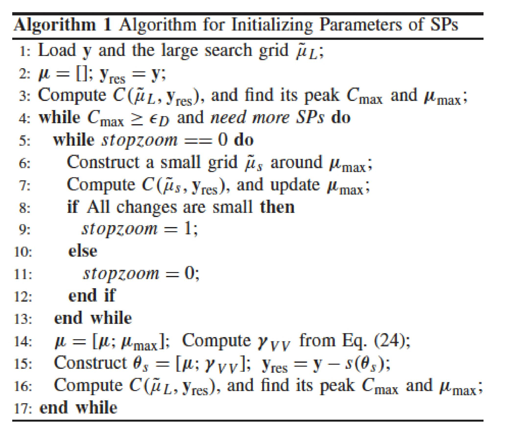
Rimax Algorithm
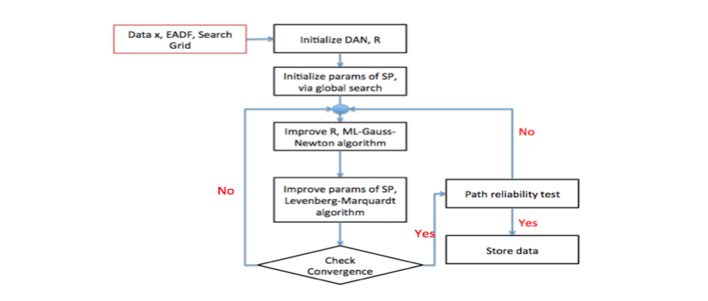
Rimax Flowchart
Our main research in this field is -
Incorporating effects that have been neglected in previous, simplified, models, such as polarization, diffuse background radiation, change of antenna characteristics with bandwidth, and interdependency between delay and phase of the MPCs.
Acceleration of the computations: since running an unoptimized maximum-likelihood estimator for a single snapshot (taken within a few ms) can take hours even on a fast computer, it is essential to find high-speed computation methods. Our work has already led to order-of-magnitude improvement in runtime, and we are continuing to find new methods to improve efficiency.
Besides extracting the parameters of the MPCs, it is also important to identify “clusters”, ie., groups of MPCs that have similar characteristics and behavior. We are working with algorithms from big-data processing and machine learning (such as variations of the K-means algorithm or density-based kernel algorithms.)
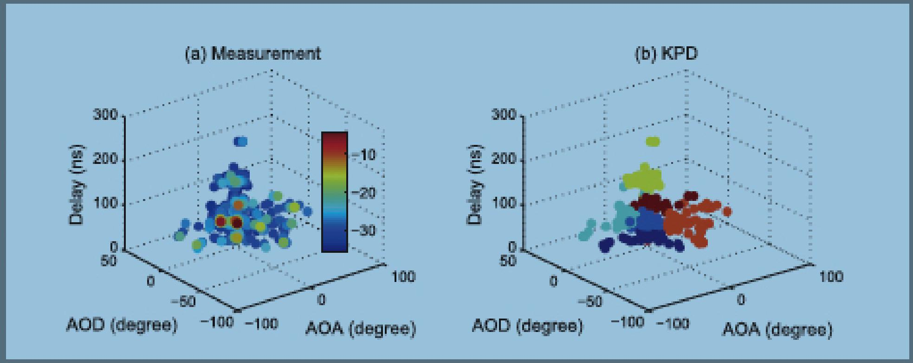
Clustering of MPCs based on big-data inspired approach
Channel Modeling
For wireless system design we often need a compact, statistical model that represents the essential channel properties without being tied to a specific location. Development of channel models is thus the last step in the arc that starts with building channel sounders, and continues with performing measurement campaigns and extracting the MPC parameters. WiDeS is working on generic channel modeling structures, and on the parameterization of models based on measurement campaigns. We are also interacting with international standardization bodies such as 3GPP and IEEE 802 to increase usage of our models. Many of the currently used models are based on work of WiDeS members; for example, the double-directional channel modeling approach used for all standardized MIMO models was introduced by WiDeS head Molisch.
The figure below shows the principle of this model. It represents, essentially, the directions of the MPCs at both transmitter and receiver. While the model is now so widely accepted that this seems almost a matter of course, at the time of its introduction it was a paradigm shift away from the representation of the “transfer function matrix” that described in a MIMO system the transfer function from each transmit to each receive antenna element. Our current research revolves around large-scale variations of the double-directional impulse response, and whether it can be expanded into a finite sum of discrete contributions, or a "diffuse background" should be included.
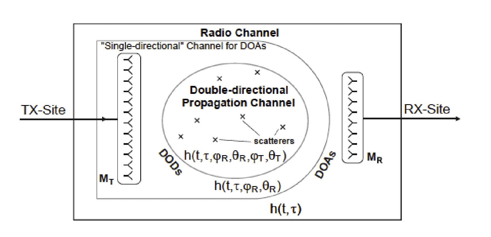
Double-directional channel model
Another direction of research revolves around "geometry-based stochastic channel models" (GSCMs). The basic principle is to statistically model the distribution of scatterers in space (by prescribing a probability density function of their location); impulse responses (including double-directional impulse responses) can then be found by a simplified ray tracing procedure that assumes that only single-scattering or double-scattering processes can occur. The origins of GSCMs go back to the 1970s, when a rings of scatterers around the MS was used to compute the effectiveness of diversity antennas at the BS. We were the first to generalize the model to the MIMO case, showing that many of the simplifications of the "diversity-antenna" scenario do not hold for MIMO, and proposing new modeling methods that solved this problem. Our current work focuses on adopting this model to the specific challenges of car-to-car propagation channels.
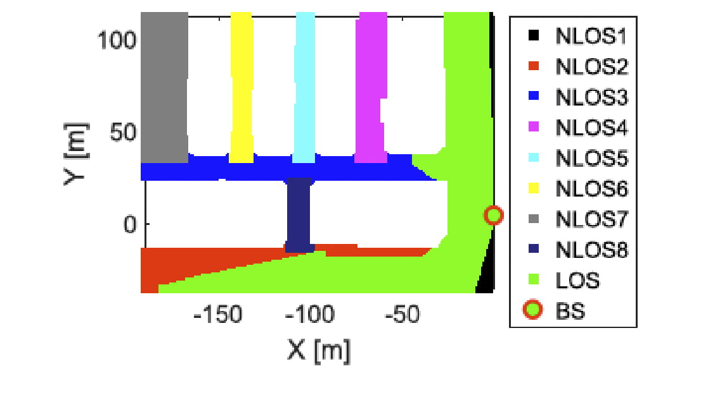
Microcell environment with color-coded streets
Pathloss of mm-waves in different streets
mm-Wave Channels
Millimeter-wave communication will be an essential part of 5G cellular communication. Understanding the underlying channel is thus an essential task. While 3GPP has already established a model, it is oversimplified and only suitable for some rough comparisons between different systems, but is not suitable for assessing absolute performance. WiDeS is thus performing extensive measurement and modeling activities in the area, starting from the unique channel sounder we have constructed, to performing first-of-its-kind measurements, to bringing our results into standardization.
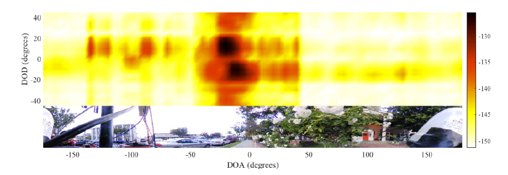
Figure (1)
Figure (1) shows the power angular spectrum for one of the measurement locations from a microcell measurement campaign for a residential environment. For the same location, the extracted multi-path components in 3-dimensional space are shown in Figure (2). With these measurements, we report models for key channel characteristics, such as path-loss, shadowing, delay spread and angular spread for both LOS and NLOS channels.
Figure (2)
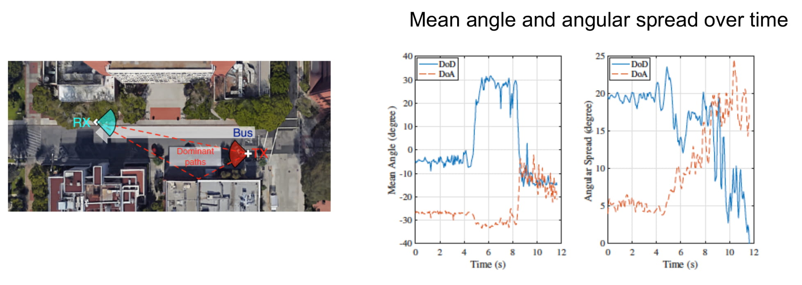
Figure (3)
The unique capabilities of our channel sounder enable measurements to understand temporal dependencies of the mm-wave channels. For mm-wave systems depending on the beamforming gain, these temporal variations, especially the evolution of the angular spectra, are utmost importance while designing efficient beam-discovery and beam-switching algorithms. Figure (3) shows a sample measurement in a time varying channel. In this example, where we observe two main MPCs while the channel is idle; the LOS path and a reflection as shown the figure, then a bus blocks these two dominant paths as it moves along street. The effects of blockage on the mean angles and the angular spreads are also shown in Figure (3).
Furthermore, Figure (4) shows the PDP from another measurement location in which there are several moving scatterers in the environment. These measurements give insight on omnidirectional and directional delay spread and their evolution as the channel changes.
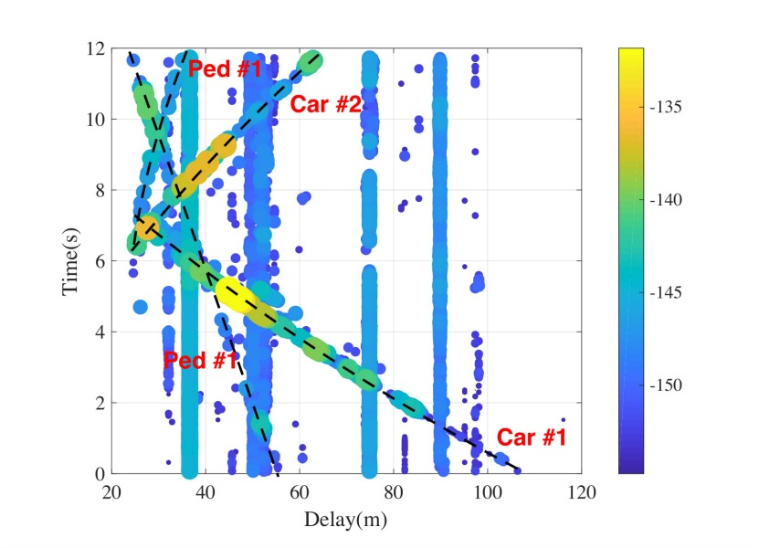
Figure (4)
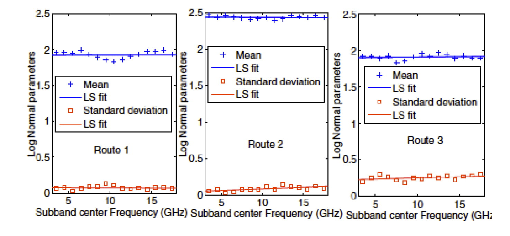
Figure (5)
By using an ultra-wideband channel sounder with 15 GHz bandwidth we performed measurements to study the propagation channel characteristics in the 3–18 GHz band and to understand the frequency dependence of the transition of channel characteristics in the region between microwave frequencies and mm-wave frequencies. Figure (5) shows the parameter values for root mean square delay spread statistics for a NLOS UMa scenario. Unlike the common belief, since there is no strong LOS component, all NLOS MPCs experience similar power decay with frequency and hence the RMS delay spreads does not change significantly with frequency.
V2V Channels
Communications between vehicles, and between vehicles and infrastructure, are integral parts of modern transportation systems to reduce accidents and improve traffic flow. The US Department of Transportation will mandate capability for 802.11p based communication in all cars manufactured after 2018. To assess how reliable such systems will be, we need to understand the propagation channel between vehicles. WiDeS has been performing extensive measurement campaigns that provides not only field strength, but also directional properties of such channels, and considers effects such as shadowing by trucks.
A second important transportation environment is high-speed train. While not widespread in the USA, it is a widely used part of infrastructure in Asia and Europe. Communication both by passengers for their entertainment, and by the train equipment for safety-relevant messages, to the base station is important. Understanding the propagation channel is essential to assess reliability and create suitable system design.
V2V channels will play a critically important role in connected cars and autonomous driving. To ensure the necessary reliability for safety-critical applications, extensive measurements are required as the basis for further system development. WiDeS has been working on this important topic since 2009.
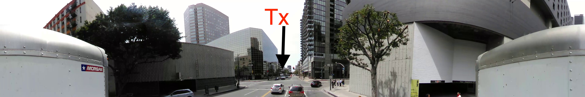
Two trucks approach a street intersection in the opposite direction at Downtown Los Angeles for Truck-to-truck (T2T) propagation channel measurements.
One recent example of our work is a truck-to-truck MIMO 5.8 GHz propagation channel measurement campaign in Downtown Los Angeles. The figure above shows the scenario when two trucks drive towards each other in the opposite direction in a typical urban environment. Thanks to our real-time V2V channel sounder and the corresponding HRPE algorithm, we are able to extract time-of-arrival, direction of departure, direction of arrival, Doppler shift and signal power for strong discrete multipath components and provide statistics about the diffuse multipath components.
Below we can see a figure that shows the continuous time-varying receiver angular power spectrum, when the RX truck started with U-turn and drove towards the TX truck. Different from the typical car-to-car propagation channel, the figure suggests that the presence of the trailer, which is higher than the antenna, provides a strong reflection that is acting as a mirrored component to the line-of-sight path.
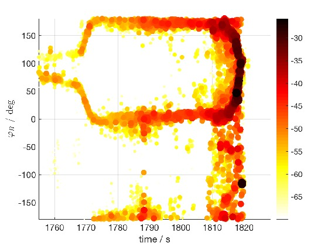
The time-varying angular power spectrum at the receiver (RX) when two trucks drive in the opposite direction at Downtown Los Angeles for Truck-to-truck (T2T) propagation channel measurements.
We also performed measurements on a freeway in Los Angeles. Applying our advanced signal processing algorithms, we could not only identify the directions and delays of the multipath components with high resolution on a snap-shot-by-snapshot basis, but also track the evolution of the MPCs.
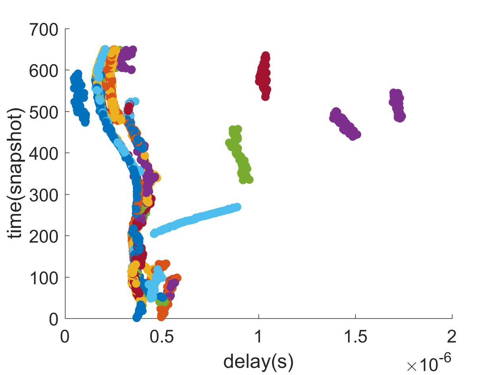
The time-varying delay of tracked MPCs based on extracted specular paths from the T2C propagation channel measurements conducted on I-110N freeway.
The figure shows the results of a path-tracking algorithm that uses the evaluation results from the HRPE algorithm. These tracked MPCs can be further utilized to parameterize a MIMO geometry-based stochastic channel model.
Massive MIMO and Cloud RAN
The requirement for constantly increasing spectral efficiency has driven the adaptation of base stations with large number of antenna elements, either as concentrated arrays (massive MIMO), or distributed over a larger area, and hauled back with optical fiber to a central processing location (Cloud RAN). Understanding the potential and limitations of those systems requires new channel measurements and modeling, since many of the insights gained with conventional MIMO channel sounders do not hold anymore. At WiDeS, we have built a flexible channel sounder that can measure -
upto 128 antenna elements at transmitter and receiver,
have bandwidth of up to 10 GHz, and/or can measure at any carrier frequency, and with any bandwidth, in the frequency band up to 10 GHz, and
can have the antennas concentrated at one location, or distributed at up to 16 different locations.
We are performing a variety of measurement campaigns, and create new channel models, as well as perform theoretical investigations to assess the impact of those channel properties on actual system performance.
We have done extensive work in the measurement and modeling of propagation channels for large arrays. A typical example is a campaign (jointly with Samsung and TU Ilmenau) in downtown Cologne, Germany, where we measured propagation channels between a 900-element base station (a truly massive array), and mobile stations with 24 antenna elements. Results were evaluated with our high-resolution (RiMax) algorithm, and provided not only the directions and delays of the discrete multipath components, but also, for the first time in urban environments, the parameterization of the diffuse multipath. The discrete multipath were grouped into clusters, and the statistics of those clusters extracted.
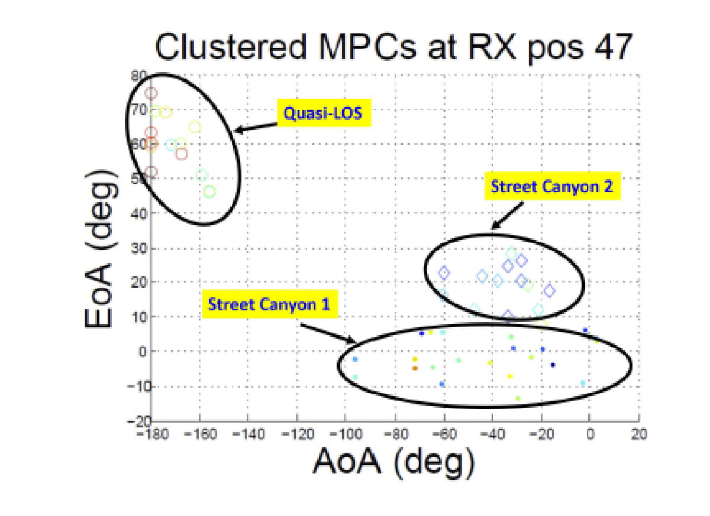
Clustering and propagation mechanisms of multipath components in an urban environment measurement.
To verify the validity of the results, and to gain further insights into propagation mechanisms, we always check our results against the environmental map. We ensure whether the directions and delays fit plausible propagation paths. In the figure below, we can see various paths over the rooftops of the urban environment, as well as waveguiding through the street canyons.
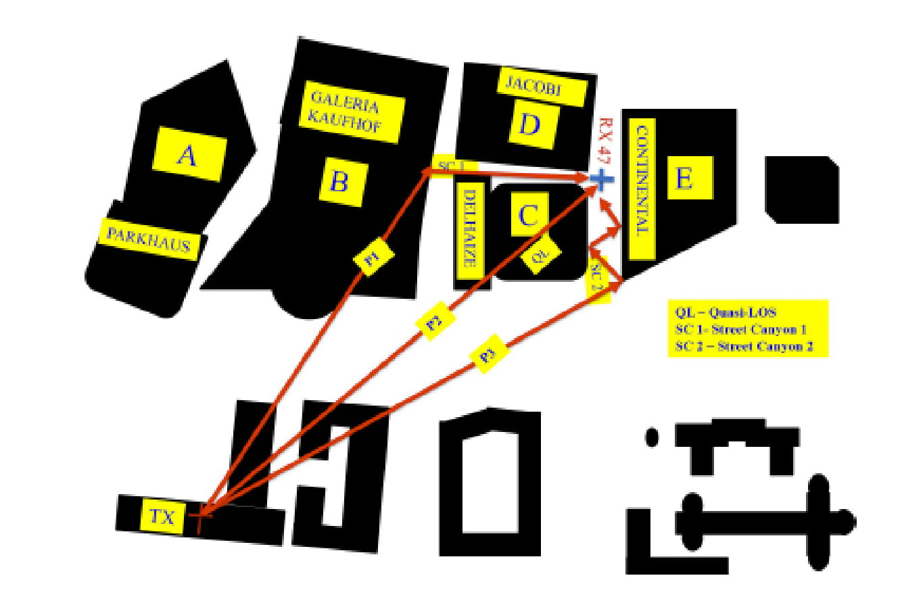
Map and propagation mechanisms for a location in the massive MIMO array.
Communication System Design
An exciting challenge in wireless system design is the need to merge insights from many different disciplines. From communication theory to networking, optimization theory, to physics, system design requires both broad and deep thinking.
WiDeS has established itself as a pioneer in a number of select topics, namely MIMO systems (particularly reduced-complexity MIMO transceivers, wireless video distribution, ultrawideband communication and localization, and novel modulation and multiplexing methods (particularly OAM and OTFS). In all of these fields we follow our philosophy of finding innovative approaches that are inspired by practical applications, but grounded in solid theory.
The increase in number of connected devices (IoT) and rising throughput demands have driven wireless systems towards increasing spectral efficiency and exploring higher frequency bands (mm-wave). One such popular technique involves equipping the base stations with large number of antenna elements, either as concentrated arrays (MIMO), or distributed over a larger area, and hauled back with optical fiber to a central processing location (Cloud RAN). These techniques are especially beneficial for transmission at the mm-wave frequencies by either reducing the wireless link distance (Cloud RAN) or by enabling large beamforming gains (MIMO). Several open problems exist in the implementation of these techniques, such as reducing the system and algorithmic complexity, improving energy efficiency, reducing cost of transceivers and backhaul infrastructure, channel estimation and resource allocation. We are mainly working on the following aspects:
Hybrid beamforming : A major challenge in implementing MIMO systems, and specifically massive MIMO systems where concentrated arrays may have 100s of antenna elements, is the hardware cost and energy consumption imposed by having one dedicated RF (up/downconversion) chain for each antenna element. As early as in 2004, WiDeS head Molisch had invented the concept of hybrid beamforming, in which a linear RF beamformer is combined with a small number of RF chains and digital processing. This technology exploits the low cost and energy efficiency of mixed signal RF components to enable cost effective MIMO transceivers. This idea has received great interest in the recent years, and WiDeS is working on new avenues for such technology such as exploring new architectures for the RF beamformers, designing the beamformers for a multi-user MIMO system in realistic channels and exploring approaches to reduce the training effort required to design the beamformers. Some of our recent work involves appending the RF beamformers with switches for better beam-shaping (Hybrid Beamforming with Selection) and a novel user-centric approach to the beamformer design.
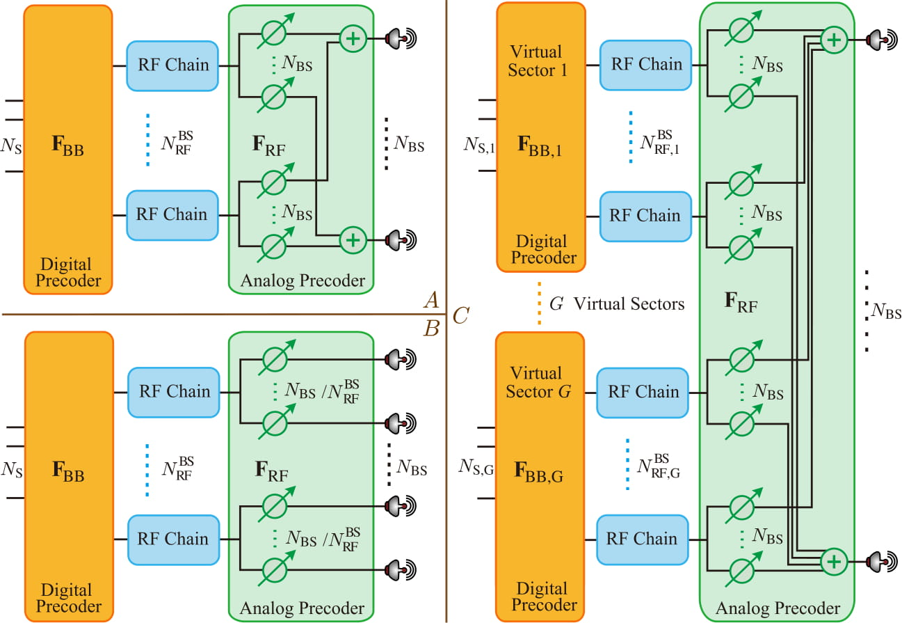
Hybrid beamforming
In some recent work, we investigate systems with both link ends equipped with hybrid beamforming structure. Therefore, individual UEs are able to benefit from both beamforming and spatial multiplexing gains. To alleviate the burden of instantaneous CSI acquisition, we specifically explore the analog beamforming adapted to the second order channel statistics. Consequently, the dimension of the effective channel is reduced from the number of antenna elements to the number of RF chains. We need to deal with two major challenges: 1) four beamforming matrices are coupled together, including analog/digital precoders/combiners; 2) analog beamformers are based on channel statistics, while digital beamformers are based on instantaneous effective CSI.
We first consider decoupled designs of analog and digital beamforming to reduce the complexity of joint optimization. For fixed analog beamformers, we proposed a virtual sectorization scheme to optimize the digital beamforming based on partial effective CSI feedback. Simulating over real channel profiles from our measurement activities, we demonstrate advantages of the proposed scheme over the state of art method. We also proposed a framework to optimize such beamformers for the mm-wave channel, exploiting its directional characteristics and sparse nature, to jointly incorporate the interaction between analog and digital beamforming. Furthermore, mindful of the scarce resource elements within a coherence block of mm-wave bandwidths, we also extend the above framework to incorporate the impact of training resource allocation, based on which we propose a user-centric virtual sectorization to maximize the overall network throughput.
Cloud RAN : Originally conceived in 2001 as “base station cooperation”, and later known variously as “network MIMO” and “Cooperative Multipoint”, Cloud RANs allow antennas in different locations to form a distributed MIMO system allowing joint coordinated signal transmission, such that all signal energy is useful and no inter-cell interference is created. However, implementations involving full antenna cooperation may require very high capacity backhaul links connecting the antennas, a large channel estimation overhead and computational burden. Therefore, in this interest of making Claud RAN practically viable, WiDeS is working on the theoretical implications of several practical limitations of Cloud RAN, such as limited backhaul capacities, backhaul link delays, limiting the number of antenna elements that can cooperate (referred to as cooperation cluster), mitigating un-coordinated interference, and minimization of energy consumption. Some of our recent work introduces the concept of interlaced clustering, which can mitigate un-coordinated interference, enabling ‘cell free’ Cloud RAN without a significant increase in implementation cost.
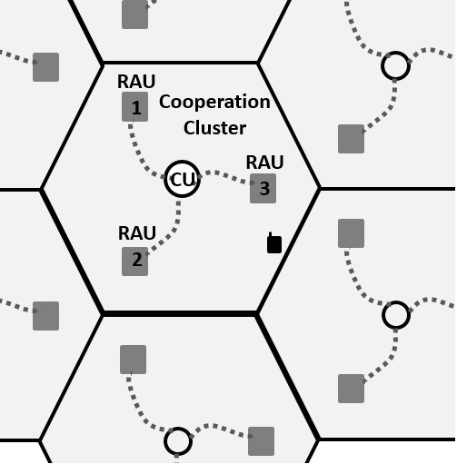
Cloud RAN
Ultrawideband Communication and Localization
Ultrawideband (UWB) communications systems are commonly defined as systems with large absolute and/or large relative bandwidth. Such a large bandwidth offers specific advantages with respect to signal robustness, information transfer speed, and/or localization accuracy, but leads also to fundamental differences from conventional, narrowband, systems.
In working on UWB, WiDeS is following in the footsteps of USC professor Bob Scholtz, the pioneer of UWB communications. Our current main areas of interest are:
Design of low-complexity UWB transceivers : The large system bandwidth of UWB may help resolve hundreds of channel scatterers which, while advantageous as previously discussed, also increases complexity of the receiver design. In coherent UWB receivers, a large number of Rake fingers maybe required to exploit the power received from these scatterers. WiDeS has over the years designed several low complexity receiver designs, that can significantly reduce the hardware cost of coherent UWB receivers. Our current work explores the limitations and benefits of such low complexity designs. We also leverage the ‘duality’ between UWB and MIMO transmission to enable new insight and new designs for either technologies. One recent award-winning paper introduces a new RAKE receiver - JS-Rake, that accounts for the channel estimation overhead of low complexity RAKE receivers to improve performance. Another popular receiver design for UWB is the transmitted-reference receiver that allows the demodulation of UWB signals without channel estimation and without the construction of coherent receivers (which often would be expensive and energy-consuming because of the large bandwidth and associated high sampling rate of the receivers). We are developing and prototyping a variety of such transmit reference implementations, with focus on improving throughputs, reducing noise accumulation and multi-user access. One recent prototype involves a new architecture for frequency shifted reference receivers that allows transmission of higher order modulation formats such as quadrature amplitude modulation. We furthermore investigate the use of extreme UWB spreading (10 GHz bandwidth) for jammer suppression.
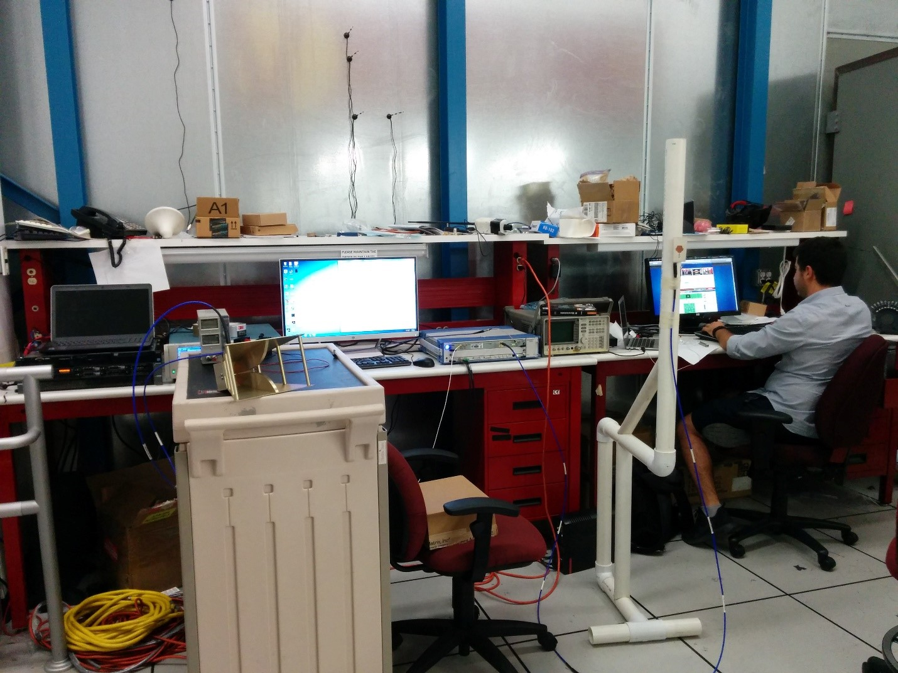
Testing the JS-Rake system design on the UWB testbed.
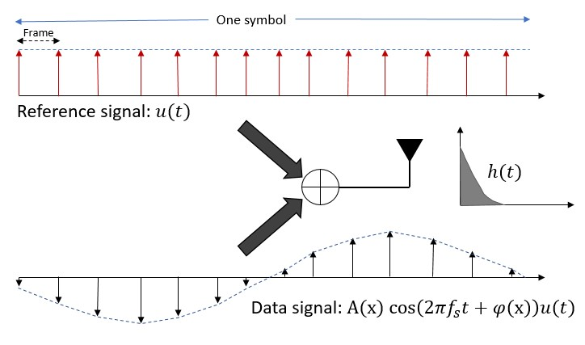
Frequency shift reference transmitter structure (Optional)
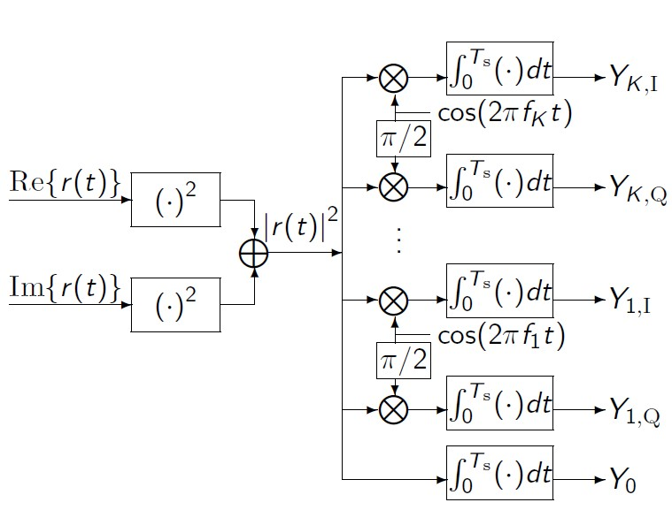
QAM capable multi-differential Frequency shift reference UWB receiver.
Localization based on time-of-arrival (TOA) :
Localization is a critical task in many wireless systems, essential for applications such as emergency response, and location-based services. While outdoor localization often works very well, thanks to GPS, the same does not hold for indoor environments or even densely built up urban areas such as street canyons. In those cases, alternative methods such as those based on UWB offer an attractive alternative.
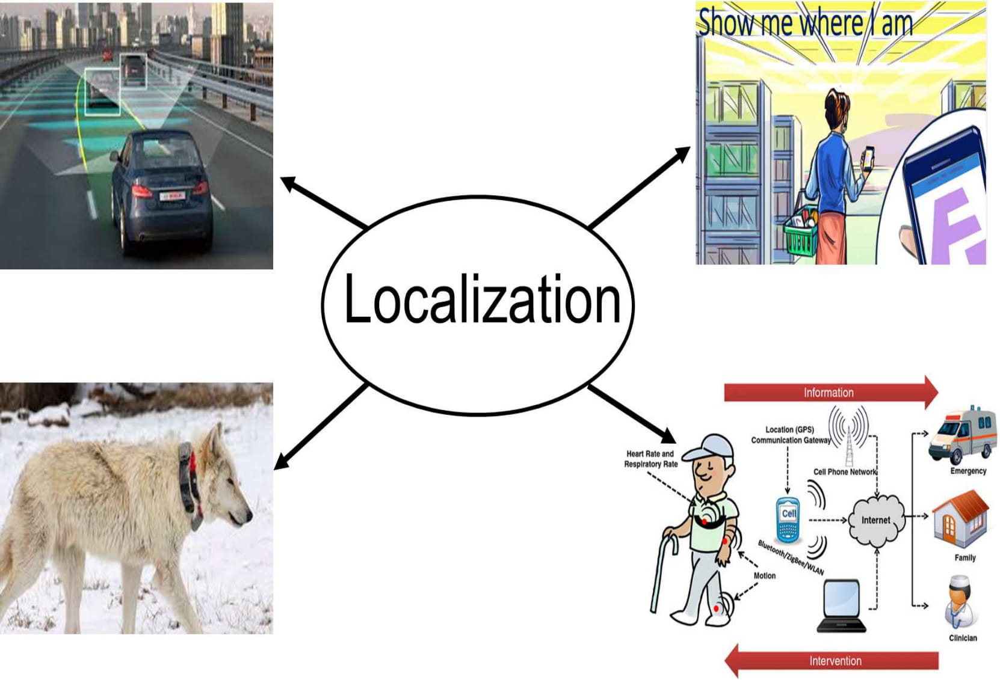
Localization based on time-of-arrival (TOA)
UWB signals are well suited for time-of-arrival localization, because they provide highly accurate range measurements. However, translating these range measurements to precise positions is nontrivial. We are dealing such systems when real-world limitations are present, such as -
Interference from other (active) users
Multipath.
Blocking of the line-of-sight for some of the ranging measurements
Multi-target problems in passive localization, i.e., several targets with similar radar signature are present at different locations
Such practical constraints lead to challenging fundamental new limitations that we have been exploring for many years, and from which, in turn, we derive practical algorithms whose performance can approach those limits.
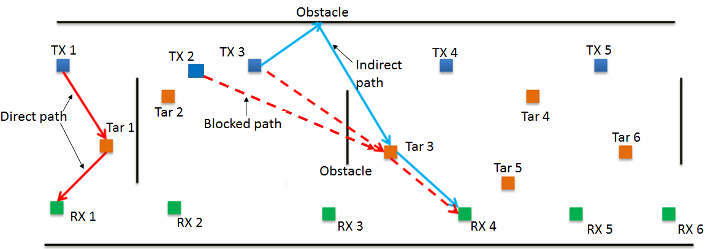
Challenge in localization in indoor environments.
At WiDeS, our research has contributed to the following breakthroughs:
The suppressing of interference using time-hopping transmissions (i.e., the time-domain equivalent of spread-spectrum techniques).
Passive multi-target localization algorithms that are blocking and multipath aware.
Design and performance analysis of localization networks using stochastic geometry tools for modeling environment realizations.
Wireless Video Distribution
The majority of wireless internet traffic is driven by video-on-demand, such as Netflix, Amazon Prime, and Hulu. Video is characterized by a unique feature: many different people want to watch the same videos, though at different times. WiDeS has pioneered since 2011 system architectures that make special use of these properties to turn memory into bandwidth. This can be used to improve video throughput by orders of magnitude without the need for expensive densification of basestation with backhaul. Rather, our new architecture rests on two pillars -
Femtocaching, where a small base station without backhaul link, but with a large cache, stores popular files, and transmits them upon demand to the users. Since those stations do not need backhaul, they are extremely cheap to deploy, and since they can be placed with high density, result in high spectral efficiency.
Caching on devices together with device-to-device communications: The concept of femtocaching can be pushed further by caching video files on the user devices themselves – while the caches would not be large enough to store all the videos a particular person might want to watch, the aggregate cache of the users in a particular area is large enough. Then, a user can get a required file via spectrally efficient D2D communication from another device, without having to go via the base station.
The WiDeS group is a pioneer of wireless video distribution. We invented (in collaboration with our USC colleagues Prof. Caire and Prof. Dimakis) both the concept of femtocaching, and caching combined with device-to-device communications. Both of these approaches can improve video throughput by orders of magnitude, by converting storage into bandwidth. These concepts have been taken up by groups all over the world and are now elaborated in hundreds of papers. At WiDeS, we are working at many aspects of such a system, including -
Fundamental, information-theoretic limits on throughput, energy efficiency, and latency.
Experimental investigation of popularity distributions and their spatio-temporal concentration, as well as machine-learning based algorithms for prediction.
Algorithms for caching and assignment of caches to users for downloading.
Prototyping and testbed construction.
Besides these video-caching oriented networking problems, we also consider issues of joint communication, computation, and caching. WiDeS has developed, in collaboration with Bell Labs, Lyapunov-drift based algorithms for assigning resources at data centers and routing methods for both wired and wireless networks.
Fundamentals of Wireless Caching
We work on the fundamentals of wireless caching networks, including the information-theoretic limits, analytical expressions, optimality, and trade-offs for throughput, outage probability, energy efficiency, and delay latency.
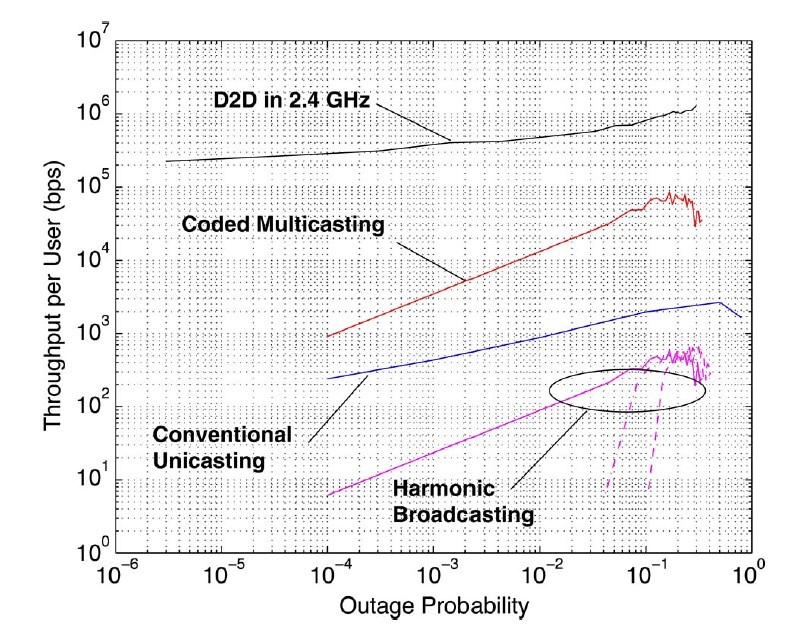
D2D caching has orders of magnitude better tradeoff of throughput versus outage probability than other video distribution schemes.
We also explore the interactions between between BS-, D2D-, and self-caching and impacts of different fundamental system parameters, such as memory size and cooperation distance. In the figure below, we show the existence of trade-off between throughput and energy efficiency.
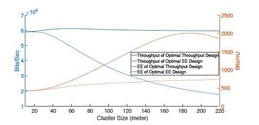
Tradeoff between energy efficiency and throughput in D2D video caching with self-caching.
Experimental investigation of popularity distributions
The effectiveness of both femtocaching and D2D-based caching depends critically on the popularity concentration, i.e., that a small number of popular video files account for a large part of video traffic. Since the popularity distribution modeling is meaningful only if it is based on real-world data, we investigate the dataset from real-world data. In the cooperation with Prof. Sastry from King’s College London, we work on comprehensively understanding and modeling for statistics of both individual user preference probabilities and global popularity distribution based on hundreds of millions of data from the BBC iPlayer system. We have developed a framework with hierarchical structure for modeling and showed that important statistics can be modeled under the framework.
In addition, we also work on the machine-learning based algorithm for enhancing prediction and system design.
Algorithms for caching
We work on the algorithms and designs for effective caching and resource assignments in wireless caching networks. According to the scenarios and applications, we investigate different types of caching approaches and policies in consideration of both homogeneous and heterogeneous popularity distribution models; one example is shown below. Based on the analytical expressions and trade-off investigations, we design algorithms to provide the best trade-off between different aspects.
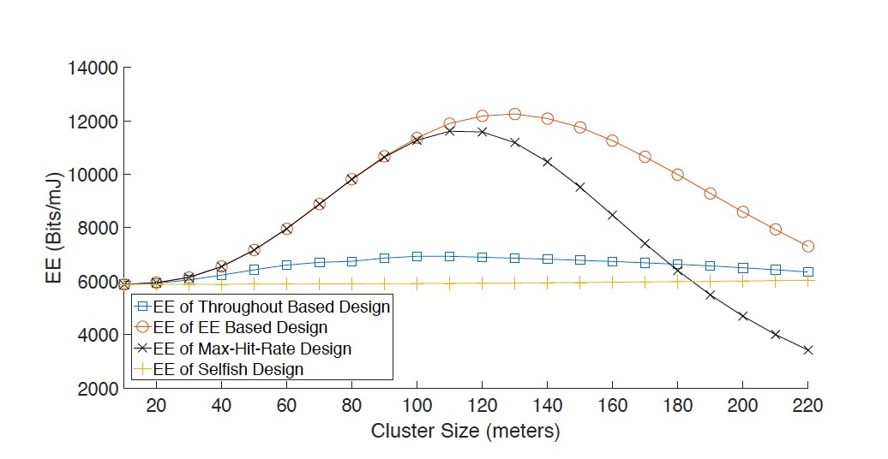
EE comparisons between different caching policies in the system with γ = 1.3, S = 10, and λu = 1000 km^−2.
Joint communication, computation, and caching
Besides these video-caching oriented networking problems, we also consider issues of joint communication, computation, and caching. WiDeS has developed, in collaboration with Bell Labs, Lyapunov-drift based algorithms for assigning resources at data centers and routing methods for both wired and wireless networks. Our current works include the following aspects:
Augmented Information (AgI) Service : The services provide end users with augmented information that results from the real-time processing of source information via possibly multiple service functions that can be hosted anywhere in the cloud network. Software defined networking (SDN) technologies can then be used to steer network flows through the appropriate chain of network functions.
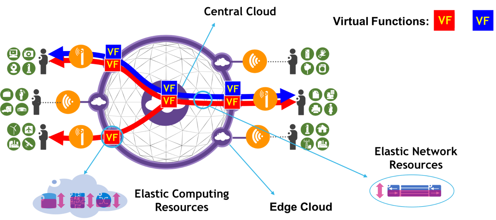
AgI services form elastic virtual service networks
Dynamic Cloud Network Control : We develop algorithms on how to best distribute the services, and where to execute the necessary processing, in a dynamic cloud network setting, where service demands are unknown and time-varying. We tackle both the scenario of wired backbone links between data centers, and the even more difficult case of wireless connections between computing nodes, which is motivated by the advent of mobile and fog computing where service functions can also be hosted at wireless computing nodes.
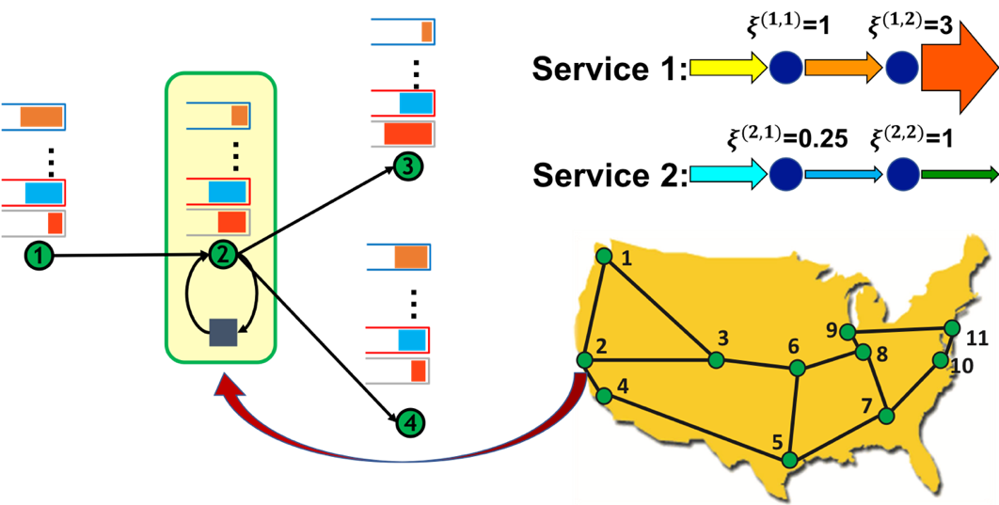
Queuing system of Abilene US Continental Network: each node is equipped with both transmission and computing devices
Novel Modulation and Multiplexing Methods
While MIMO-OFDM has become the standard data transmission approach, the development of novel modulation and multiplexing methods is not standing still. While it was shown, e.g., that OFDM is the optimum transmission method for frequency-selective method under certain assumptions, not all these assumptions need be satisfied in practical situations. Similarly, spatial multiplexing may become challenging in the presence of certain hardware limitations. We thus investigate novel approaches, such as -
Orbital Angular Momentum (OAM) multiplexing : OAM can be interpreted as a “phase twist” imposed on a wave propagating down the axis. Different OAM “modes” with different phase twists (but propagating down the same axis) are orthogonal to each other, and thus can carry different data streams. This feature is especially useful for line-of-sight links that need to carry several Gbit/s. A key advantage of OAM modes is that they can be separate by analog components, thus obviating the need for spatial equalizers operating at ultra-high computational speeds. In collaboration with Prof. Alan Willner (link), the pioneer of OAM, we have worked on theory and prototyping of OAM in the mm-wave regime, and – inter alia – demonstrated 32 GBit/s transmission in the 28 GHz band.
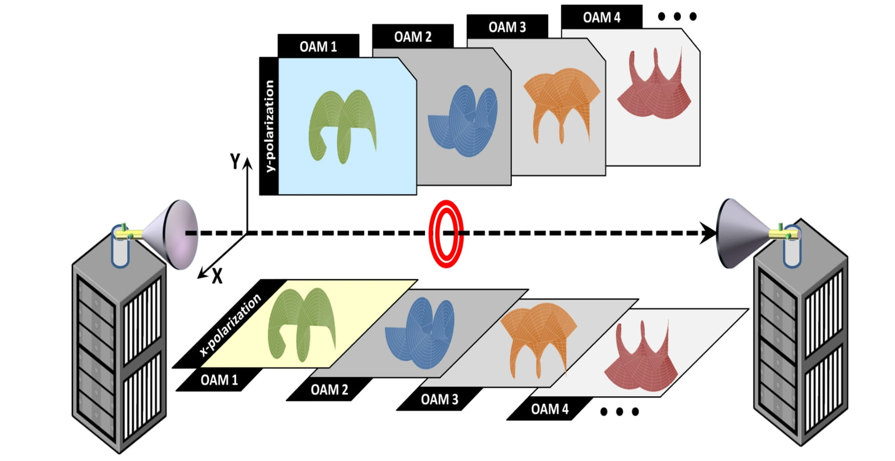
Principle of OAM
Orthogonal Time Frequency Space (OTFS) modulation : OTFS is a novel modulation format that can be interpreted as modulating symbols in the delay-Doppler domain (instead of the time-frequency domain). It provides full time- and frequency diversity, and is thus especially well suited for communications in environments with high mobility, where no feedback is possible. But it also shows important advantages in large MIMO systems (better scaling of complexity and/or performance with number of antennas) and internet of things (better power efficiency). We are investigating both fundamental performance and low-complexity practical algorithms.